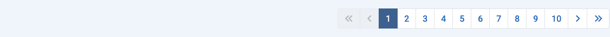
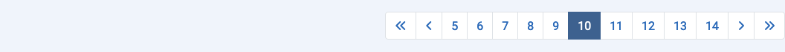

A maioria dos componentes possui visualizações de lista que exibem itens do banco de dados. Podem haver centenas, milhares ou até mesmo milhões de itens. O Limite de Lista padrão, o número de itens exibidos em uma página de resultados, geralmente é 20. Abaixo de cada página de resultados, se houver mais resultados do que o limite atual, você encontrará uma barra de Paginação:

Com o primeiro número na barra de Paginação selecionado, os primeiros 20 resultados serão exibidos na lista, ou qualquer que seja o número de resultados definido no Limite de Lista. Selecione o próximo número ou o ícone Próximo () para avançar para a próxima página de itens.
O número máximo de páginas exibidas em uma única barra de paginação é 10. No entanto, números de páginas abaixo e acima da página atual são exibidos para facilitar o avanço ou retrocesso página a página.
Aqui está uma captura de tela da lista de Plugins tendo avançado para a Página 10 com o Limite de Lista configurado para 5:

Na página um, os ícones da Primeira página e da página Anterior estão desabilitados. Na última página, os ícones da página Próxima e da Última página estão desabilitados.
Traduzido por openai.com